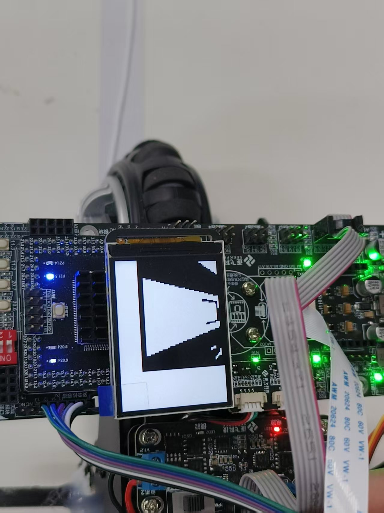
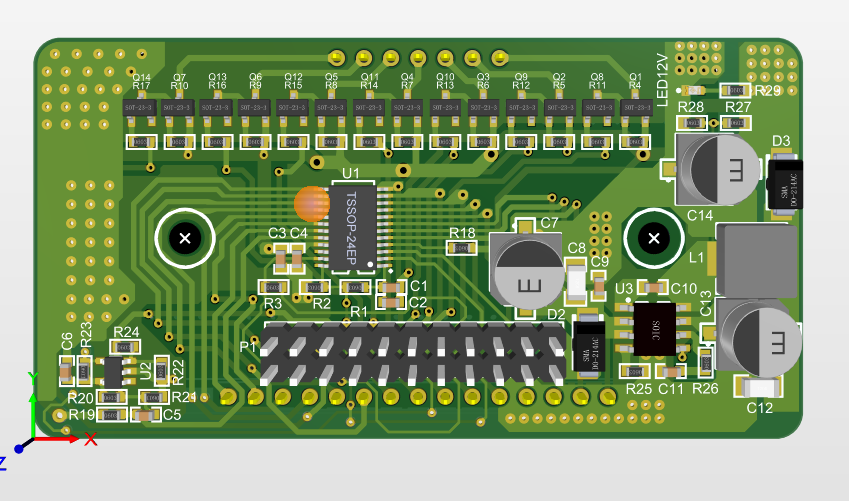

基于TC264DA双核处理器的自平衡摩托车控制系统
本项目设计了一套基于Infineon TC264DA双核处理器的自平衡摩托车控制系统。与传统自平衡方案不同，本系统不使用动量轮， 而是采用后方大轮上横向嵌套的八组小轮作为平衡执行机构，通过精确控制小轮的转速和方向来实现车身的动态平衡。
系统集成摄像头、陀螺仪、编码器等多种传感器，实现摩托车的自主平衡控制与路径识别功能。同时搭载TLD7002 LED驱动芯片，实现随车身姿态变化的灯光秀效果。
以下是摩托车平衡控制与路径识别系统的演示视频、赛道识别效果和硬件设计。
摩托车自平衡控制演示

视觉路径识别效果展示

TLD7002 LED驱动模块 3D 设计图